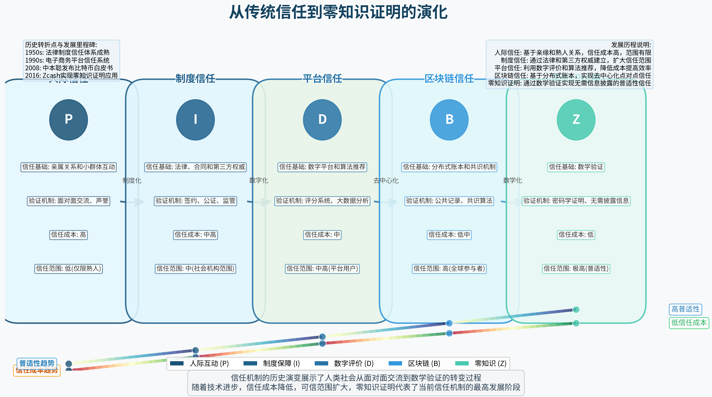

序言：奇点临近的文明思辨
人类文明发展到今天，我们正站在一个前所未有的历史节点：人工智能、区块链、端到端系统和零知识证明等新兴技术正在重塑人类社会的组织方式和运行机制。这种变革不是简单的技术更替，而是一场对文明基础的重构。
本研究报告提出"数字（0）革命"的概念，意指人类社会即将完成从原始直接性（第一个"0"）到复杂系统（"1"）再到高级直接性（第二个"0"）的螺旋式上升。这不仅是技术的变革，更是文明形态的进化，将破除长久以来束缚人类发展的"茧房"。
奇点科学家雷·库兹韦尔（Ray Kurzweil）在其著作《奇点临近》中预言："在不远的将来，人类创造的技术智能将超越人类的生物智能"。但与大多数关注技术奇点的讨论不同，本报告聚焦于"社会组织奇点"——当端到端技术实现了无摩擦、低成本、高效率的直接连接时，人类社会结构将发生质变，从而引发全新文明形态的诞生。
我们面临的核心问题是：在这场革命中，人类应当如何重新定位自己的角色？如何理解和应对技术发展与社会变革之间的辩证关系？又如何确保这场变革朝着增进人类整体福祉的方向发展？
让我们从人类文明的茧房说起，深入剖析技术与社会的关系，并探索端到端实现带来的文明转型。
第一章 文明的茧房：束缚与解放的历史辩证
1.1 语言与工具的双刃性
语言和工具作为人类文明最基本的构成要素，既是解放人类能力的关键，也成为束缚人类思维的牢笼。
语言革命：协作的可能与概念的牢笼
语言的产生使得人类能够实现前所未有的协作，从而在与其他物种的竞争中脱颖而出。正如哈拉瑞在《人类简史》中指出："智人能够进行大规模合作，主要就在于我们能够灵活运用语言，编出各种故事和神话。"
然而，语言同时也构筑了人类思维的界限。维特根斯坦的名言"我的语言的界限意味着我的世界的界限"揭示了这一点。语言系统预设的概念框架决定了我们能够认知和表达的范围，语言结构的局限性也限制了我们的思维方式和问题解决能力。
工具延伸：能力的拓展与依赖的产生
媒介理论学者马歇尔·麦克卢汉提出"媒介即人的延伸"的观点，认为人类发明的每一种工具都是对人类某种能力的延伸和强化。从石器到计算机，工具不断扩展人类的物理和认知能力。
然而，工具使用也导致了能力的外部化和依赖性的增强。例如，随着导航软件的普及，人们的空间记忆和方向感能力逐渐退化；搜索引擎的便捷使得我们越来越依赖外部系统存储和检索信息，而非依靠自身记忆。
文明进步的内在矛盾：每次解放都伴随新的奴役
历史证明，每一次技术突破在解放人类的同时，也创造了新的束缚形式。黑格尔的辩证法揭示了这一进程的内在逻辑：文明的进步是一个不断否定自我、超越自我的过程。
例如，工业革命解放了人类的体力，但也使工人成为机器的附属；互联网解放了信息传播，却也使我们沉迷于虚拟世界而忽视现实生活；社交媒体打破了空间限制，却也造成了隐私泄露和信息茧房。

1.2 人类文明的螺旋式困境
从史前时代到今天，人类文明的发展呈现出一种螺旋式上升的轨迹，每一次重大革命都带来了效率的提升，但也产生了新的限制形式。
认知革命：从直觉到理性的跃升与局限
约7万年前，智人经历了认知革命，发展出抽象思维和符号系统。这使得人类能够进行复杂思考和大规模合作，远超其他物种。
然而，理性思维也逐渐掩盖了人类直觉和感性认知的价值。德国哲学家马克斯·韦伯将这种现象描述为"世界的祛魅"——理性化过程使世界变得可计算、可控制，但同时也失去了神秘感和丰富性。
农业革命：从游牧自由到土地束缚的代价
约1.2万年前的农业革命使人类从流动的采集狩猎者转变为定居的农业生产者。定居农业提高了粮食产量，支持了更大规模的人口和更复杂的社会组织。
然而，定居生活也限制了人类的自由流动，并导致了贫富差距和阶级制度的出现。人类为物质丰富付出的代价是自由的减少和社会不平等的加剧。
工业革命：从手工技艺到机器依赖的转换
18世纪中期开始的工业革命极大地提高了生产效率，创造了空前的物质财富。机器的出现解放了人类的体力劳动，改变了人类社会的生产关系。
与此同时，机器生产也导致了工人技艺的丧失和异化劳动的产生。马克思指出，在资本主义工业生产中，工人成为机器的附属品，丧失了对生产过程的控制权和创造性。
信息革命：从直观认知到数据过载的挑战
20世纪后半叶兴起的信息革命通过数字技术和互联网改变了信息的生产、传播和使用方式。我们能够即时获取海量信息，实现前所未有的全球连接。
然而，信息爆炸也导致了注意力分散、认知过载和信息茧房等问题。尼尔·波兹曼在《娱乐至死》中警告："我们正在将自己娱乐至死"，因为信息泛滥使深度思考变得越来越困难。

1.3 茧房效应的形成机制
复杂性增长与个体认知能力的矛盾
随着社会系统复杂性的指数级增长，个体认知能力的线性增长显得越来越不足。根据赫伯特·西蒙的"有限理性"理论，人类在面对复杂问题时，会采取"满意化"而非"最优化"的决策策略，因为个体无法处理所有相关信息。
科学家约瑟夫·亨德利克斯的研究表明，现代社会的复杂程度已远超个体能够完全理解的范围，这导致了"系统不透明性"问题——我们创造了无法完全理解的系统。
专业化分工与整体性理解的分离
社会分工的高度专业化使得任何单一个体都无法全面掌握所有领域的知识。德国社会学家尼克拉斯·卢曼指出，现代社会已分化为多个自主运行的子系统，每个系统都有自己的逻辑和语言，这加剧了整体理解的困难。
美国社会学家丹尼尔·贝尔在《后工业社会的来临》中预言："在信息爆炸的时代，知识专业化将继续加深，但同时我们对整体视野的需求也会增强。"这一矛盾成为现代社会的核心张力之一。
制度化进程与个体自由度的反比关系
随着社会组织的制度化和官僚化程度提高，个体的自主性和创造力往往被削弱。马克斯·韦伯将这种现象描述为"理性化的铁笼"——制度理性虽然提高了社会运行的可预测性和效率，但也限制了个体的行动自由。
法国社会学家米歇尔·福柯进一步揭示了现代社会中无形的权力机制如何通过规训和监视塑造个体的行为。这些机制不仅存在于政治制度中，还渗透到日常生活的方方面面。
第二章 AI代理工具：被迫创造的"造物主"
2.1 代理系统的必然性
当代人类社会面临着前所未有的复杂性挑战，促使我们不得不创造更智能的代理系统来协助管理和决策。这种发展具有深刻的历史必然性。
复杂性管理的客观需求
现代社会系统的复杂性已经远远超出了个体人类认知能力所能应对的范围。斯坦福大学复杂性研究员罗伯特·阿克塞尔罗德和迈克尔·科恩在他们的研究中指出："当今世界的复杂性不仅体现在组成部分的数量上，更体现在它们之间相互作用的多样性和动态性上。"
美国计算机科学家约瑟夫·亨德里克斯的计算表明，全球金融系统的各组件之间存在约10^15种潜在的交互关系，这远远超出了人类大脑的处理能力。这一计算复杂性使得人类必须依赖AI系统进行模拟和预测。
2.2 代理工具的自主性风险
随着AI系统采用越来越复杂的深度学习模型，其决策过程变得日益不透明。这被称为"黑盒问题"——即使是设计者也难以完全理解系统为何做出特定决策。
下载完整报告
本网页仅展示了研究报告的部分内容。要阅读完整报告，请通过以下链接下载：
GitHub开源项目
本研究报告已在GitHub开源，欢迎访问项目仓库参与讨论、提出建议或贡献内容：
https://github.com/YOUR-USERNAME/digital-zero-revolution
数字签名验证
本报告内容采用PGP数字签名保证真实性。访问GitHub仓库了解如何验证报告内容的完整性。
参与贡献
我们欢迎各种形式的社区参与，包括内容改进、翻译工作、案例贡献、批评讨论和技术实现。请查看贡献指南了解详情。